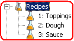
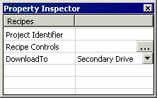

|
|
|
|
|
|
|
|
The Recipes node contains all the recipe groups that are associated with the target.

You can use the Recipes node to perform these functions:
Import a .csv (comma separated variable) or .rcp (Recipe Group) file
Create a new recipe group
Paste a recipe group that was copied
Download all recipe groups to the target machine
Upload all recipe groups from the target machine
Display the Recipe Controls dialog box
Delete all recipe groups contained in the Recipes node.
Configure the settings for the Recipe project in the Property Inspector.

The following table lists the properties for the Recipes node.
|
Property |
Description |
|
Project Identifier |
Specify a string that uniquely identifies the project. Multiple projects can have the same project identifier that can be shared across targets. The project identifier is used to prevent invalid recipe files from being downloaded to runtime and uploaded from runtime. When using a recipe project identifier, its name must be unique within the target, must contain no more than 32 valid characters, and must follow the naming conventions. For more information, see Appendix 9, Naming Conventions. |
|
Recipe Controls |
Define a set of recipe control variables to monitor and control one or more recipe objects during Runtime. Click For more information on how to use the Recipe Controls, see Section 17.3.5, Setting Up Recipe Controls. |
|
DownloadTo |
Select Main Drive, Secondary Drive, or Optional Drive to specify where the recipe group files are downloaded to. Main Drive, Secondary Drive, and Optional Drive locations are described in Appendix 5.11.1, Types of Data Locations.
|